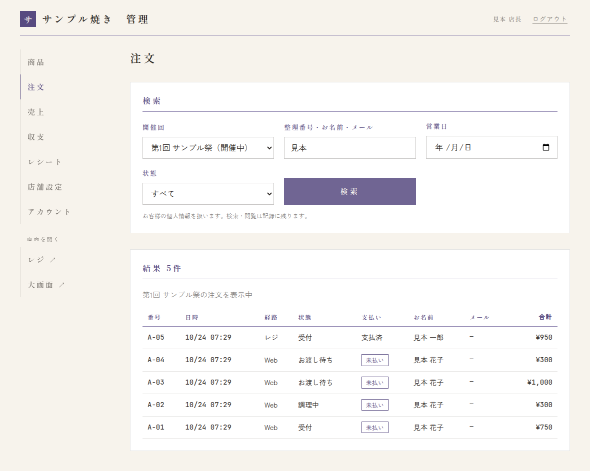
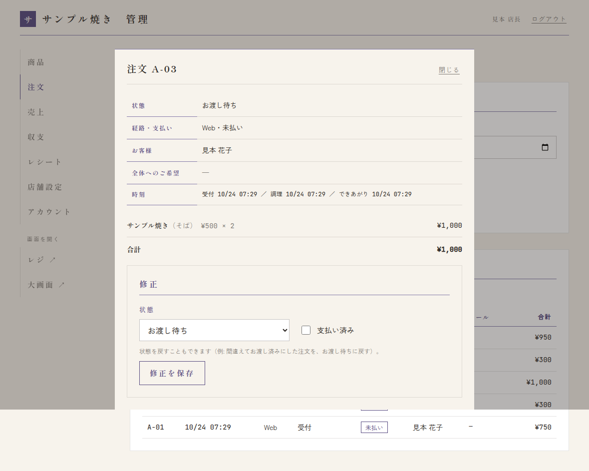

当日（店長として）
- 開店前: スタッフに注文帳・レジの URL と PIN、大画面の URL を伝えます。機材の置き場所を決めて、スタッフと一緒に「開店前」を進めます。
- 営業中: 操作はスタッフと同じです（→ 注文帳とお渡し・レジと売り切れ）。スタッフが間違えて進めた・取り消した注文は、店長が直せます（→ 下の「注文を検索・修正する」）。
- 営業中の損益: 管理画面の商品の画面の上に、今の損益と「あと何点」が出ます（→ 損益と見込み）。
- 買い出しのレシート: スタッフが写真で送ったら、店長が確かめて確定します（→ レシートの確認と確定）。
- スタッフからの連絡: スタッフ向けのページでは、困ったら「店長に連絡」と書いています。店長で解決できないときは運営に連絡してください。
閉店後
注文を検索・修正する
メニューの 注文 を開きます。
- 開催回を選びます（最初は今の開催回。「すべての開催回」も選べます）。
- 整理番号（例: A-12）・お名前・メールアドレス・営業日・状態で絞り込み、検索 を押します。
- 一覧の注文を押すと、くわしい内容と「修正」の欄が開きます。




- 修正: 状態と「支払い済み」を直して 修正を保存。状態を戻すこともできます（例: 間違えてお渡し済みにした注文をお渡し待ちに戻す、取り消し・未受取を元に戻す）。
- 記録に残ります: お客さんの個人情報を扱うので、検索・閲覧・修正はすべて記録されます。必要なときだけ使ってください。
- 個人情報は消えます: お客さんの名前・メールアドレスは、学園祭の終了から一定の期間がたつと消されます。そのあとは名前・メールでは検索できません（整理番号ではできます）。
次の日に向けて
- 売り切れにした商品・選択肢を、販売中に戻します（レジの売り切れ設定か、管理画面の商品から）。
- 取り置き時間・数量の上限を見直します（→ 店舗設定）。
- PIN を変えたときは、翌日スタッフに新しい PIN を伝えます。